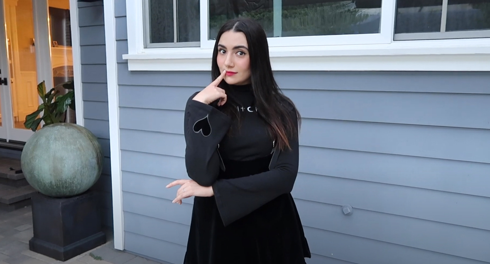

Safiya Nygaard es una youtuber americana de 30 años enfocada a crear contenido relacionado a belleza, ciencia, moda y viajes. Es particularmente reconocida por su serie de videos “Bad Makeup Science” en los que normalmente selecciona un tipo de maquillaje -labiales, sombras, bases, etc.-, adquiere un gran número de estos y después procede a mezclarlos para crear una versión “franken”.
Fue precisamente a raíz de uno de estos videos de “Bad Makeup Science” que en otoño del 2019 Safiya tuvo la oportunidad de lanzar una colección de labiales en colaboración con ColourPop, la conocida marca de cosméticos americana.